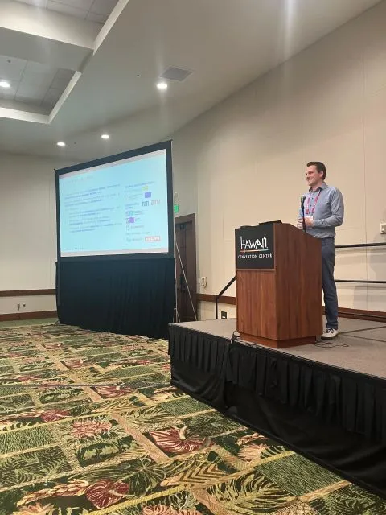

I had the great honor of giving a keynote talk today at the Multi-Modal Localization and Mapping Workshop at #ICCV25, representing the Mobile Robotics Lab and Prof. Stefan Leutenegger.
I’m now looking forward to the poster session on Tuesday afternoon, where I’ll present my latest work "SuperEvent: Cross-Modal Learning of Event-based Keypoint Detection for SLAM".
🔗 Project Page: https://lnkd.in/dibXv--u
I’m now looking forward to the poster session on Tuesday afternoon, where I’ll present my latest work "SuperEvent: Cross-Modal Learning of Event-based Keypoint Detection for SLAM".
🔗 Project Page: https://lnkd.in/dibXv--u